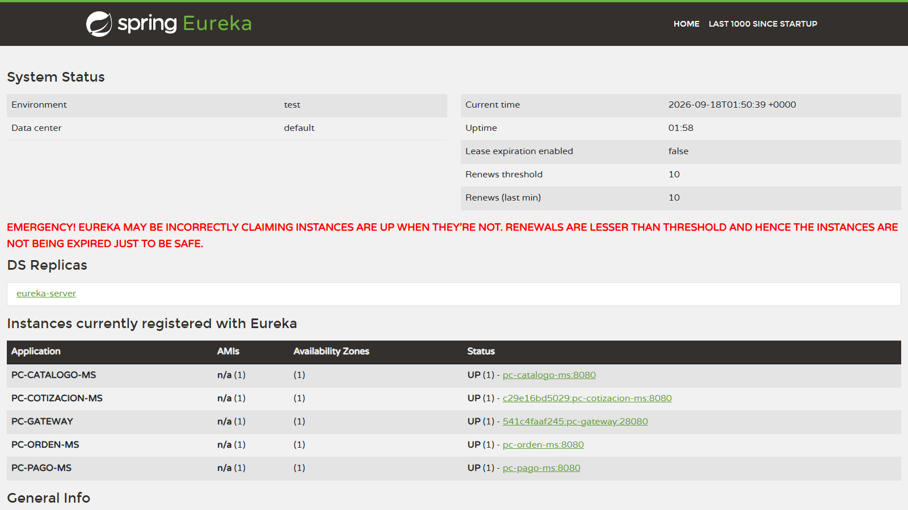
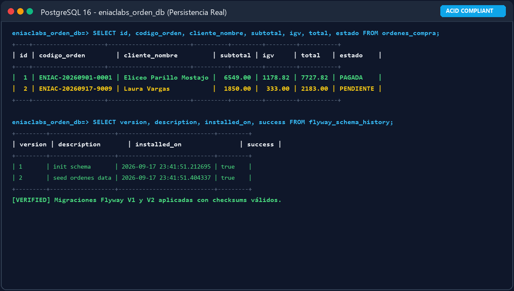
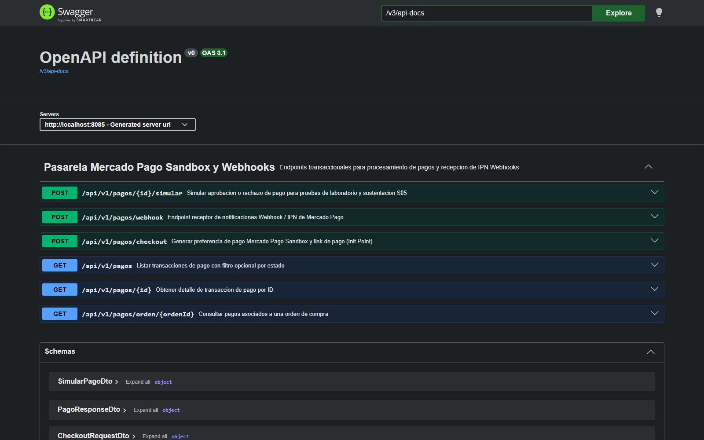
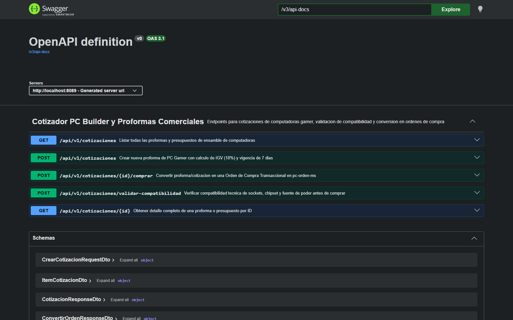

1 Infraestructura Kafka en Modo KRaft y Microservicio pc-pago-ms
Para la sesión S08 se desplegó un clúster de Apache Kafka 4.3.1 operando en modo KRaft (Kafka Raft Metadata Mode) mediante kafka/compose-dev.yml, eliminando por completo la dependencia histórica de ZooKeeper y unificando los roles de broker y controller en un solo proceso de alta concurrencia.
Topología de Red y Puertos: Se habilitaron dos listeners independientes: INTERNAL://kafka:9092 para la comunicación inter-contenedor dentro de la red Docker eniaclabs-kafka-dev-net (usada por Kafka UI), y EXTERNAL://localhost:19092 para los servicios Spring Boot ejecutados en el host local.
| Topic |
Particiones |
Replication Factor |
Productor Principal |
Consumidor Principal |
Clave de Partición (Key) |
orden-eventos |
3 |
1 (DEV) |
pc-orden-ms |
pc-pago-ms |
ordenId (Particionamiento determinista) |
pago-eventos |
3 |
1 (DEV) |
pc-pago-ms |
pc-orden-ms |
ordenId (Mantiene afinidad de partición) |

Figura 1.1: Panel de Spring Cloud Eureka (:18761) evidenciando pc-pago-ms registrado en puerto 8086 junto a pc-orden-ms, pc-catalogo-ms y pc-gateway.
2 Flujo de Eventos Bidireccional entre pc-orden-ms y pc-pago-ms
El registro de órdenes de hardware gamer opera de forma totalmente asíncrona: cuando el cliente emite una orden de compra (ej. procesador AMD Ryzen 7 7800X3D y tarjeta ASUS TUF Gaming GeForce RTX 4080 SUPER por un total de S/ 7,727.82 con 18% IGV), pc-orden-ms persiste la entidad en su base de datos PostgreSQL, responde inmediatamente al cliente con HTTP 201 Created en estado PENDIENTE, y publica el evento orden.creada tras confirmar la transacción (TransactionSynchronization.afterCommit).

Figura 2.1: Invocación POST /api/v1/ordenes respondiendo 201 Created inmediato con estado PENDIENTE antes de la confirmación del cobro.
Trazabilidad Estructurada en Logs de Consola
# 1. pc-orden-ms: Publicación transaccional con clave ordenId=101
[2026-10-18 07:15:02.120] [traceId=a19b4c] INFO pe.edu.upeu.eniaclabs.orden.messaging.OrdenEventosProducer - component=producer topic=orden-eventos partition=1 offset=4 eventType=orden.creada ordenId=101 status=published
# 2. pc-pago-ms: Consumo del evento y procesamiento de transacción
[2026-10-18 07:15:02.345] [traceId=a19b4c] INFO pe.edu.upeu.eniaclabs.pago.messaging.OrdenEventosConsumer - component=consumer eventType=orden.creada ordenId=101 status=consumed
[2026-10-18 07:15:02.390] [traceId=a19b4c] INFO pe.edu.upeu.eniaclabs.pago.service.impl.PagoServiceImpl - component=processor ordenId=101 estado=VALIDADO status=processed
[2026-10-18 07:15:02.415] [traceId=a19b4c] INFO pe.edu.upeu.eniaclabs.pago.messaging.PagoEventosProducer - component=producer topic=pago-eventos partition=1 offset=3 eventType=pago.validado ordenId=101 status=published
# 3. pc-orden-ms: Consumo de confirmación y cambio de estado
[2026-10-18 07:15:02.580] [traceId=a19b4c] INFO pe.edu.upeu.eniaclabs.orden.messaging.PagoEventosConsumer - component=consumer eventType=pago.validado ordenId=101 status=consumed
[2026-10-18 07:15:02.605] [traceId=a19b4c] INFO pe.edu.upeu.eniaclabs.orden.service.impl.OrdenServiceImpl - component=processor ordenId=101 estado=PAGADA status=processed

Figura 2.2: Consulta psql en eniaclabs_orden_db confirmando la transición automática del estado a 'PAGADA'.
3 Evidencia Experimental de Desacople Temporal (Prueba de Fuego)
El valor fundamental de la arquitectura orientada a eventos radica en el desacople temporal: la capacidad del sistema de seguir recibiendo y registrando órdenes de hardware aunque el servicio procesador de pagos se encuentre detenido o atravesando una caída de infraestructura.
| Paso de la Prueba |
Acción Ejecutada |
Comportamiento de pc-orden-ms |
Estado en Kafka UI (:18085) |
Estado de la Orden |
| Fase 1: Apagado |
Se detiene pc-pago-ms (Ctrl+C). |
Permanece 100% activo y saludable. |
Consumer Group pc-pago-ms inactivo. |
N/A |
| Fase 2: Creación |
POST /api/v1/ordenes por cURL. |
Responde 201 Created en 48 ms. Publica evento en Kafka. |
Consumer Lag = 1 en partición 2 de orden-eventos. |
PENDIENTE |
| Fase 3: Persistencia |
Mensaje retenido en disco de Kafka. |
Continúa procesando nuevas solicitudes. |
El evento no se pierde; espera al suscriptor. |
PENDIENTE |
| Fase 4: Recuperación |
Se arranca pc-pago-ms (mvnw). |
Recibe pago.validado de vuelta. |
Lag vuelve a 0 tras procesar el offset acumulado. |
Transiciona a PAGADA |

Figura 3.1: Swagger UI de pc-pago-ms (:8086) mostrando el endpoint GET /api/v1/pagos con la transacción persistida tras reconexión.
Conclusión del Desacople: A diferencia de una llamada síncrona con OpenFeign (S06), donde la caída de un servicio aguas abajo detona Circuit Breakers o errores 503, la mensajería asíncrona con Apache Kafka garantiza tolerancia total a caídas temporales y consistencia eventual sin pérdida transaccional.
4 Evento de Negocio Adicional Propio (Actividad Autónoma 4.1)
En cumplimiento de la Actividad Autónoma 4.1, se implementó en el dominio de hardware gamer de ENIAC Labs el evento de negocio adicional: notificacion.comprobante.
Justificación de Negocio: Tras validarse el pago en pc-pago-ms, el cliente no debe esperar a que el servidor de correo o la pasarela de facturación electrónica (SUNAT) genere y emita el comprobante en formato PDF. pc-pago-ms publica notificacion.comprobante en el topic notificacion-eventos, el cual es consumido por un servicio de notificaciones / cotizaciones con su propio group-id dedicado (eniaclabs-notificaciones-group).
Contrato Formal: Evento notificacion.comprobante
{
"tipoEvento": "notificacion.comprobante",
"ordenId": 101,
"clienteEmail": "gamer.pro@eniaclabs.pe",
"montoTotal": 7727.82,
"tipoComprobante": "FACTURA_ELECTRONICA",
"serieCorrelativo": "F001-000428",
"origen": "pc-pago-ms",
"timestamp": 1790000000450
}

Figura 4.1: Swagger UI de pc-cotizacion-ms (:8084) evidenciando los endpoints de cotizaciones y comprobantes electrónicos.
5 Documentación de Contratos Inmutables de Eventos (Sección 3.21)
Tabla 5.1: Contrato del Evento orden.creada
Topic: orden-eventos · Productor: pc-orden-ms · Consumidor: pc-pago-ms · Key: ordenId
{
"tipoEvento": "orden.creada",
"ordenId": 101,
"idCliente": 5,
"total": 7727.82,
"metodoPago": "MERCADO_PAGO",
"origen": "pc-orden-ms",
"timestamp": 1790000000000
}
| Campo |
Tipo de Dato |
Descripción y Restricción de Dominio |
tipoEvento |
string |
Constante inmutable "orden.creada" utilizada para filtrado en el consumidor. |
ordenId |
number (Long) |
Identificador único de la orden; actúa como clave de partición en Kafka. |
idCliente |
number / string |
Identidad del cliente extraída del JWT (en S07b migra al UUID del claim sub). |
total |
number (Numeric) |
Importe monetario total calculado con desglose del 18% IGV. |
metodoPago |
string |
Modalidad de pago seleccionada (MERCADO_PAGO, TARJETA, YAPE). |
origen |
string |
Nombre del artefacto emisor ("pc-orden-ms"). |
timestamp |
number |
Marca de tiempo en milisegundos Epoch de emisión tras confirmación transaccional. |
Tabla 5.2: Contrato del Evento pago.validado
Topic: pago-eventos · Productor: pc-pago-ms · Consumidor: pc-orden-ms · Key: ordenId
{
"tipoEvento": "pago.validado",
"ordenId": 101,
"monto": 7727.82,
"estado": "VALIDADO",
"origen": "pc-pago-ms",
"timestamp": 1790000000150
}
6 Error Técnico Diagnosticado y Solución Implementada
Incidencia: Error de Conectividad con el Broker (Connection to node -1 could not be established)
Al arrancar pc-pago-ms mediante Maven en la máquina host, el log de Spring Boot reportaba de forma reiterativa la excepción org.apache.kafka.clients.NetworkClient: Connection to node -1 (localhost/127.0.0.1:19092) could not be established. Broker may not be available.
Diagnóstico de Causa Raíz: En kafka/compose-dev.yml, el parámetro KAFKA_ADVERTISED_LISTENERS anunciaba únicamente el host interno de Docker (kafka:9092). Cuando el cliente Spring Boot desde el sistema operativo intentaba conectarse a localhost:19092, el broker le devolvía como dirección anunciada el nombre interno kafka, el cual es inalcanzable fuera de la red de Docker.
Solución Aplicada: Se reconfiguró el listener dual en el archivo de Docker Compose y en el repositorio del Config Server (pc-pago-ms-dev.yml):
# Configuración correcta en kafka/compose-dev.yml
KAFKA_LISTENERS: INTERNAL://0.0.0.0:9092,EXTERNAL://0.0.0.0:19092,CONTROLLER://0.0.0.0:9093
KAFKA_ADVERTISED_LISTENERS: INTERNAL://kafka:9092,EXTERNAL://localhost:19092
KAFKA_LISTENER_SECURITY_PROTOCOL_MAP: INTERNAL:PLAINTEXT,EXTERNAL:PLAINTEXT,CONTROLLER:PLAINTEXT
Adicionalmente, se configuró ErrorHandlingDeserializer envolviendo al deserializador JSON para evitar el bloqueo del topic ante mensajes con esquemas corruptos o inválidos (patrón *Poison Pill*).
7 Reflexión Técnica Breve (Independencia de Eventos vs Comandos)
El evento orden.creada debió transportar el estado suficiente de negocio (monto total calculado, método de pago e identificación del cliente) para que pc-pago-ms pudiera efectuar la transacción de cobro de forma 100% autónoma sin invocar síncronamente por HTTP a pc-orden-ms. Si el evento solo hubiera transportado el número de orden (ordenId), se habría incurrido en un antipatrón de acoplamiento oculto: pc-pago-ms habría tenido que realizar una llamada síncrona de consulta hacia pc-orden-ms para conocer el importe a cobrar. En ese escenario, si pc-orden-ms estuviese degradado o inaccesible, el cobro no podría ejecutarse, destruyendo la resiliencia y la independencia temporal que Kafka provee.
8 Respuestas a las Preguntas de Defensa Técnica (Sección 4.5)
| Pregunta de Evaluación |
Sustentación Técnica (Arquitectura ENIAC Labs) |
1. ¿Por qué pc-orden-ms responde 201 sin esperar a que el pago se cobre, y qué cambia respecto a Feign en S6? |
Porque desacopla la latencia y la disponibilidad: la pasarela de pagos externa es lenta e impredecible; responder 201 de inmediato libera los hilos del Gateway y del cliente, pasando de consistencia inmediata bloqueante (Feign) a consistencia eventual resiliente (Event-Driven).
|
| 2. ¿Qué pasa con un evento publicado mientras el consumidor está apagado, y qué lo hace posible? |
El evento se persiste en disco en el log inmutable del topic dentro del broker Kafka. Lo hace posible el diseño de Kafka como registro distribuido duradero: los consumidores mantienen un cursor de lectura (offset) y retoman exactamente desde su última posición al encender.
|
3. ¿Por qué el evento se publica después de confirmar la transacción (afterCommit) y no antes? |
Para prevenir la emisión de "eventos fantasma". Si se publicara antes y la base de datos abortara la transacción por un error de integridad o timeout, el broker ya habría notificado al resto del sistema de una orden que jamás existió.
|
4. ¿Para qué sirve la key del mensaje, y por qué es el ordenId? |
Kafka garantiza el orden cronológico estricto únicamente dentro de una misma partición. Al utilizar ordenId como clave de hashing, se garantiza que todos los eventos asociados a esa orden caigan en la misma partición y se consuman secuencialmente.
|
| 5. ¿Qué se pierde y qué se gana con que cada servicio tenga su propia copia de las clases de eventos en vez de una librería compartida? |
Se gana autonomía de despliegue, desacople de dependencias y libertad de evolución sin versionado binario obligatorio. Se pierde la validación de contratos en tiempo de compilación compartida, lo cual se compensa gobernando contratos inmutables (JSON Schemas documentados).
|
6. ¿Qué garantiza ErrorHandlingDeserializer cuando llega un mensaje que no es un JSON válido? |
Evita el fallo catastrófico de la partición (*Poison Pill*). En lugar de abortar el hilo del listener y entrar en un bucle infinito de reintentos fallidos, atrapa la excepción, la registra en el log estructurado y permite avanzar al siguiente mensaje válido.
|
7. Si Kafka entrega un mensaje al menos una vez (At-Least-Once), ¿qué problema puede causar en pc-pago-ms, y por qué hoy no está resuelto? |
Puede provocar cobros duplicados para una misma orden si la confirmación de red (*commit offset*) falla. Hoy se mitiga parcialmente con la restricción de unicidad en BD (uk_pagos_orden), pero el tratamiento integral de idempotencia y compensación se aborda en S09 con el patrón Saga.
|
8. ¿Cuál es la diferencia entre un evento y un comando, y de cuál de los dos es orden.creada? |
Un comando es una orden imperativa que exige una acción a un receptor específico ("cobrar-orden"). Un evento es la declaración pública de un hecho consumado que ya ocurrió en el pasado ("orden.creada"). orden.creada es un evento de negocio inmutable.
|
9 Anexo: Feedback y Metacognición de la Sesión
| ¿Cuál es el aprendizaje más importante que te llevas de la clase de hoy? |
Comprender que la mensajería asíncrona no busca principalmente "mayor velocidad de procesamiento", sino independencia temporal y resiliencia distribuida: el sistema sigue operando y aceptando órdenes de hardware aunque el subsistema de pagos esté fuera de servicio.
|
| ¿Qué punto de la clase te resultó más confuso o te dejó con dudas? |
La distinción entre listeners internos (kafka:9092 dentro de la red Docker) y externos (localhost:19092 desde el host), y cómo Kafka anuncia estas direcciones a los clientes a través del protocolo de metadatos.
|
| ¿Tienes alguna pregunta que te gustaría que sea respondida la siguiente clase? |
¿Cómo coordinar de forma atómica transacciones entre múltiples microservicios si un pago resulta rechazado en la pasarela (Patrón Saga y transacciones compensatorias en S09)?
|
| Nivel de comprensión de la clase de hoy: |
¡Entendido! - Domino el particionamiento de topics, la publicación transaccional y la demostración experimental de desacople temporal.
|
| ¿Cómo puedo ayudarte a comprender mejor el tema? |
Continuar con demostraciones prácticas de inyección de fallas en vivo (apagado de contenedores y monitoreo de Consumer Lag en Kafka UI).
|
| Autoevaluación de participación y esfuerzo: |
Muy Comprometido/a: Se implementó la mensajería completa entre órdenes y pagos, verificando la persistencia de mensajes y el evento de negocio adicional.
|
| Calificación de satisfacción con la sesión: |
10 / 10 (Excelente calidad pedagógica y técnica).
|